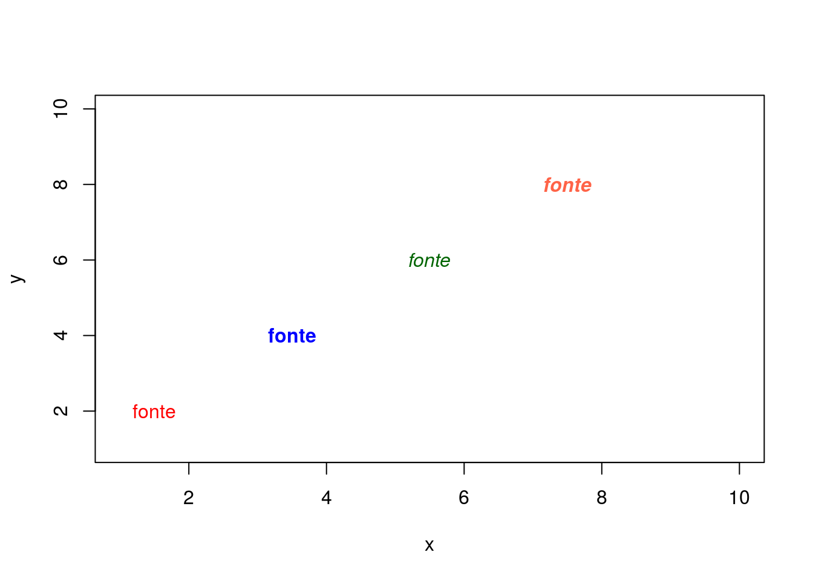
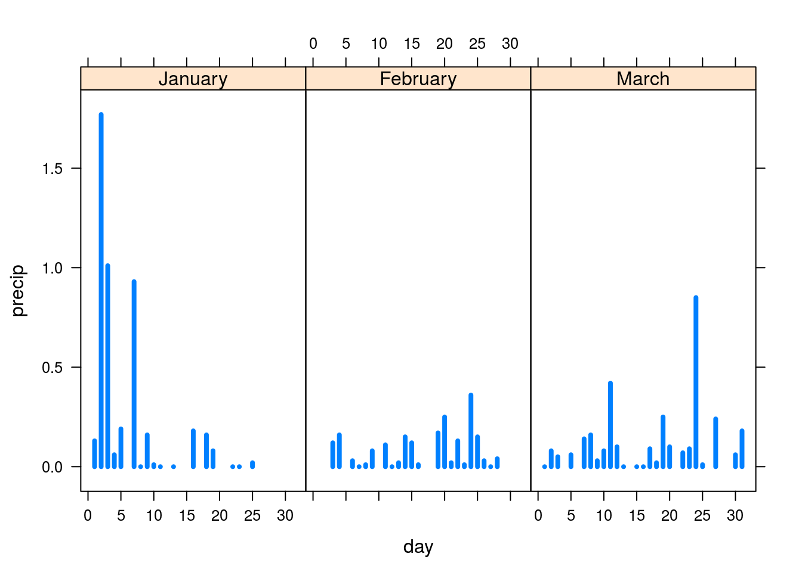
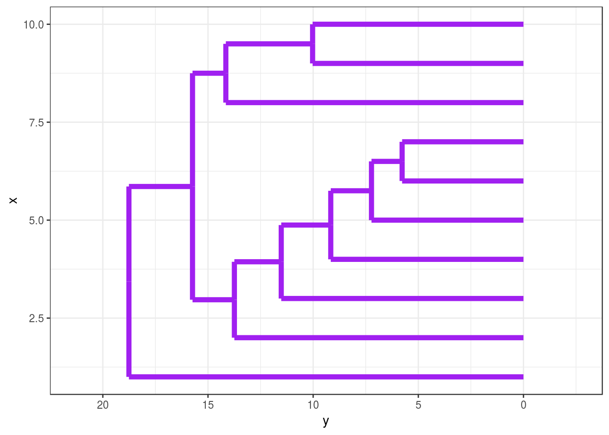

Recursos Gráficos
Gráfico de dispersão
Abaixo alguns recursos gráficos no R. O primeiro gráfico é um gráfico de dispersão para verificar a relalçao entre temperatura e pressão de um conunto de dados do R com recursos gráficos básicos.
#================== RECURSOS GRÁFICOS ==================#
data(pressure)
head(pressure) temperature pressure
1 0 0.0002
2 20 0.0012
3 40 0.0060
4 60 0.0300
5 80 0.0900
6 100 0.2700#### Gráfico de dispersão default
plot(pressure, main = "Pressão versus Temperatura", sub = "Dados do R",
xlab='Temperatura', ylab='Pressão', cex=1,pch=19, col='red')Argumentos gráficos
Abaixo um alista de argumentos que podem ser usados para gerar gráficos no R:
- adj: justificação de texto
- ann: inserção de títulos
- bg: cor de fundo
- bty: tipo de caixa do gráfico
- cex: tamanho do texto
- cex.axis: tamanho do ’tick’ dos eixos
- cex.lab: tamanho dos nomes dos eixos
- cex.main: tamanho do título do gráfico
- cex.sub: tamanho do sub-título do gráfico
- col: cor de linhas e símbolos
- col.axis: cor do ‘tick’ dos eixos
- col.lab: cor dos nomes dos eixos
- col.main: cor do título do gráfico
- col.sub: cor do sub-título
- fg: cor das linhas externas
- font: fonte para texto
- font.axis: fonte para ’tick’ dos eixos
- font.lab: fonte para nome dos eixos
- font.main: fonte para o título
- font.sub: fonte para o subtítulo
- gamma: correção para cores
- lab: número de ‘ticks’ nos eixos
- las: rotação de textos nas margens dos eixos
- lty: tipo de linha
- lwd: largura da linha
- mgp: localização de ’ticks’ e nomes de ’ticks’
- pch: tipo de símbolo
- srt: rotação de de texto na região do plot
- tck: comprimento dos ’ticks’ (em relação ao gráfico)
- tcl: comprimento dos ’ticks’ (em relação ao texto)
- tmag: tamanho do título do gráfico (em relação a outros nomes)
- type: tipo de gráfico (pontos, linhas, ambos)
- xaxp: número de ’ticks’ sobre eiso ‘x’
- xaxs: cálculo da amplitude de escal do eixo x
- xaxt: estilo do eixo x (padrão ou nenhum)
- yaxp: número de ’ticks’ sobre eiso ’y’
- yaxs: cálculo da amplitude de escal do eixo y
- yaxt: estilo do eixo y (padrão ou nenhum)
Próximo gráfico explora tipos de fontes e cores:
x <- 1:10
y <- 1:10
par(mfrow=c(1,1))
plot(x, y, type = "n")
text(1.5, 2, "fonte", font = 1,col='red')
text(3.5, 4, "fonte", font = 2,col='blue')
text(5.5, 6, "fonte", font = 3,col='darkgreen')
text(7.5, 8, "fonte", font = 4,col='tomato')
## http://pt.wikipedia.org/wiki/Lista_de_cores
plot(x, y, type = "n")
text(1.5, 2, "fonte", font = 1,col='#FFBF00')
text(3.5, 4, "fonte", font = 2,col='#191970')
text(5.5, 6, "fonte", font = 3,col='#8B0000')
text(7.5, 8, "fonte", font = 4,col='#006400')Próximo gráfico explora tipos e espessuras de linhas:
#### Gráficos de linhas
plot(x, y,type='n')
lines(c(2,8),c(8,8),lty=1, lwd=3)
lines(c(2,8),c(6,6),lty=2, lwd=3)
lines(c(2,8),c(4,4),lty=3, lwd=3)
lines(c(2,8),c(2,2),lty=4, lwd=3)Gráficos de Setores
Agora vamos explorar alguns gráficos de setores que são úteis para representar variáveis qualitativas.
#### Gráfico de setores
n <- 200
pie.sales <- c(0.12, 0.3, 0.26, 0.16, 0.04, 0.12)
names(pie.sales) <- c("Blueberry", "Cherry","Apple", "Boston Cream", "Other", "Vanilla Cream")
pie(pie.sales)# defaultpie(rep(1, n), labels = "", col = rainbow(n), border = NA)pie(pie.sales, col = c("purple", "violetred1", "green3","cornsilk", "cyan", "white"))pie(pie.sales, clockwise = TRUE, main = "pie(*, clockwise = TRUE)")
segments(0, 0, 0, 1, col = "red", lwd = 2)
text(0, 1, "init.angle = 90", col = "red")Gráfico de Barras
Abaixo alguns exemplos de gráficos de barras também podem ser usados para representar variáveis qualitativas e também variáveis discretas com poucos valores.
###Gráfico de Barras
mp <- barplot(VADeaths) # default
VADeaths Rural Male Rural Female Urban Male Urban Female
50-54 11.7 8.7 15.4 8.4
55-59 18.1 11.7 24.3 13.6
60-64 26.9 20.3 37.0 19.3
65-69 41.0 30.9 54.6 35.1
70-74 66.0 54.3 71.1 50.0tot <- colMeans(VADeaths)
text(mp, tot + 3, format(tot), xpd = TRUE, col = "blue")tipo1 <- c("Media","Media","Alta","Alta","Media","Media","Baixa","Muito Baixa","Media","Media","Media","Baixa","Baixa","Media","Media",
"Baixa","Alta","Media","Media","Alta","Alta","Baixa","Muito Baixa","Baixa","Baixa","Media","Media","Baixa","Baixa","Media",
"Baixa","Baixa","Media","Alta","Media","Baixa","Alta","Media","Media","Media","Media","Media","Media","Baixa","Baixa","Baixa",
"Media","Baixa","Baixa","Baixa","Alta","Baixa","Baixa","Alta","Media","Media","Baixa","Media","Muito Baixa","Media","Baixa",
"Baixa","Muito Baixa","Baixa","Baixa","Muito Baixa","Media","Alta","Media","Alta","Media","Media","Media","Baixa","Muito Baixa",
"Baixa","Media","Baixa","Baixa","Baixa","Muito Baixa","Media","Baixa","Media","Alta","Media","Alta","Alta","Media","Media",
"Baixa","Muito Baixa","Baixa","Alta","Baixa","Baixa","Baixa","Media","Baixa","Media","Alta","Alta")
freq.tipo1 <- table(tipo1)
tipo2 <- c("Muito Alta","Media","Baixa","Baixa","Baixa","Baixa","Muito Baixa","Baixa","Baixa","Media","Alta","Baixa","Baixa","Baixa",
"Muito Baixa","Muito Baixa","Muito Baixa","Baixa","Alta","Media","Baixa","Baixa","Media","Muito Baixa","Media","Baixa","Baixa",
"Media","Baixa","Muito Baixa","Baixa","Baixa","Baixa","Muito Baixa","Media","Muito Baixa","Media","Baixa","Muito Baixa","Baixa",
"Muito Baixa","Muito Baixa","Muito Baixa","Muito Baixa","Baixa","Alta","Media","Media","Baixa","Baixa","Baixa","Baixa",
"Muito Baixa","Baixa","Baixa","Baixa","Baixa","Media","Media","Muito Baixa","Media","Baixa","Muito Baixa","Muito Baixa",
"Muito Baixa","Baixa","Muito Baixa","Baixa","Baixa","Media","Baixa","Baixa","Media","Baixa","Baixa","Baixa","Media",
"Muito Baixa","Muito Baixa","Baixa","Baixa","Baixa","Muito Baixa","Muito Baixa","Muito Baixa","Baixa","Baixa","Baixa","Media",
"Media","Media","Baixa","Baixa","Media","Media","Baixa","Baixa","Baixa","Baixa","Baixa","Media","Muito Baixa")
freq.tipo2 <- table(tipo2);freq.tipo2tipo2
Alta Baixa Media Muito Alta Muito Baixa
3 51 22 1 25 freq.tipos <- table(tipo1,tipo2)
freq.tipos/1000 tipo2
tipo1 Alta Baixa Media Muito Alta Muito Baixa
Alta 0.000 0.008 0.005 0.000 0.004
Baixa 0.001 0.019 0.006 0.000 0.011
Media 0.002 0.019 0.009 0.001 0.009
Muito Baixa 0.000 0.005 0.002 0.000 0.001barplot(freq.tipos,beside=TRUE,legend.text=rownames(freq.tipos),main='Distribuicão', xlab='Tipos',ylab='freq. por tipo')barplot(VADeaths, beside = FALSE,col = c("lightblue", "mistyrose", "lightcyan","lavender", "cornsilk"),
legend = c('A \n B'), ylim = c(0, 200))
title(main = "Death Rates in Virginia", font.main = 1)z <- matrix(c(95,35,25,45), 2, 2)
colnames(z) <- c("Natural","Cesariano")
barplot(z, beside=TRUE, col=c("#483D8B", "#7B68EE"),border='#F5F5F5',
ylim=c(0,100),cex.names=1.75)
legend("topright", xpd=TRUE, ncol=2, legend=c("Público", "Privado"),
fill=c("#483D8B", "#7B68EE"), bty="n",cex=1.75)
title(main = "Tipo de parto e Tipo de hospital", font.main = 1)age <- c(0.3, 0.25, 0.2, 0.15, 0.1)
names(age) <- c("5 Anos", "6 Anos", "7 Anos", "8 Anos","9 Anos")
barplot(age,col=c('#6A5ACD','#8470FF','#483D8B','#7B68EE','#4682B4'))barplot(age,col=c('#8FBC8F'),border='#78866B')medias.t.n <- c(4.0, 5.1, 6.0, 4.1, 5.2, 8.7, 5.2, 4.2, 7.1, 5.7, 8.8, 8.2, 6.8, 5.5, 3.0, 4.8, 5.3, 3.0, 6.5, 5.3,
3.1, 9.3, 4.0, 4.4, 7.0, 4.7, 5.5, 7.5, 3.5, 9.5, 4.2, 5.8, 4.0, 6.5, 6.2, 5.1, 5.0, 6.8, 3.8, 4.9,
5.3, 3.6, 7.9, 5.3, 6.7, 8.4, 6.0, 4.9, 7.3, 4.5, 9.9, 5.9)
sort(medias.t.n) [1] 3.0 3.0 3.1 3.5 3.6 3.8 4.0 4.0 4.0 4.1 4.2 4.2 4.4 4.5 4.7 4.8 4.9
[18] 4.9 5.0 5.1 5.1 5.2 5.2 5.3 5.3 5.3 5.3 5.5 5.5 5.7 5.8 5.9 6.0 6.0
[35] 6.2 6.5 6.5 6.7 6.8 6.8 7.0 7.1 7.3 7.5 7.9 8.2 8.4 8.7 8.8 9.3 9.5
[52] 9.9tab <- table(cut(medias.t.n, right = T, seq(3,10, by = 1)));tab
(3,4] (4,5] (5,6] (6,7] (7,8] (8,9] (9,10]
7 10 15 7 4 4 3 tab <- (tab*100)/length(medias.t.n)
tab
(3,4] (4,5] (5,6] (6,7] (7,8] (8,9] (9,10]
13.461538 19.230769 28.846154 13.461538 7.692308 7.692308 5.769231 barplot(tab,col = c(1,2,3,4,8,6,7), density = c(20,20,20,20,20,20,20), main="Médias Turma Noturna",
xlab="Notas", ylab="Frequência % Relat.", axes = F, space =0, xaxt="n",cex.main=0.75, font.main=1,
font.axis=1, cex.axis=0.75, cex.lab=0.75,font.lab=1, ylim=c(0, 30))
## Definindo as marcas no eixo dos "x"
axis(2, at = seq(0,35,5), cex.axis = 0.75)
axis(1, at = seq(3,10, by=1) - 3, labels = c("3", "4", "5", "6", "7", "8","9", "10"), cex.axis = 0.75, las=2)Boxplot
O próximo gráfico é o boxplot em que podemos identificar as medidas de quartis e variabilidade da variável:
###### BoxPlot
b1 <- rt(1000,10)
boxplot(b1)t <- summary(b1)
t Min. 1st Qu. Median Mean 3rd Qu. Max.
-4.37800 -0.69840 0.02628 0.02147 0.73990 4.67400 boxplot(b1,border='black',main='Título',col='lightskyblue3',ylim=c(-6,6))
text(t['Min.'],'Valor Mínimo=-3.99',pos=1,col='red',cex=1)
text(t['Max.'],'Valor Máximo=3.88',pos=3,col='red',cex=1)
text(t['Median'],'Valor Mediano=0.07',pos=3,col='red',cex=1)boxplot(mpg~cyl,data=mtcars, main="Car Milage Data", xlab="Number of Cylinders", ylab="Miles Per Gallon")boxplot(len~supp*dose, data=ToothGrowth, notch=FALSE,col=(c("gold","darkgreen")),main="Tooth Growth", xlab="Suppliment and Dose")Histograma
Alguns exemplos de representação de variáveis contínuas com o histograma
####### Histograma
var <- c(60.2, 43.3, 51.2, 46.6, 32.5, 41.8, 45.9, 60.6, 32.3, 31.7, 39.4, 41.2, 60.2, 49.0, 40.5, 58.3, 42.7, 61.4, 26.0, 53.3,
58.7, 46.4, 39.1, 63.9, 51.5, 53.3, 41.6, 54.9, 55.2, 60.2, 47.3, 39.8, 46.8, 64.4, 57.9, 39.1, 44.8, 65.3, 69.7, 50.4,
54.2, 39.4, 46.6, 55.8, 53.6, 61.8, 44.3, 48.5, 53.9, 61.4, 38.1, 47.8)
hist(var,col='darkblue',main='Título do Gráfico',ylab='Frequencia',xlab='Variável em sua escala de medida')hist(var,col=14,ylim=c(0,10),labels=TRUE,main='Título \n do Gráfico', sub='Texto abaixo do eixo X',
,ylab='Frequencia',xlab='Variável em sua escala de medida')
Este gráfico premite comparar várias densidades empíricas estimadas.
hist(precip,prob=T,main='',border='seagreen')
rug(precip)
lines(density(precip,bw='nrd'),col='red')
lines(density(precip,bw='ucv'),col='green')
lines(density(precip,bw='SJ-ste'),col='yellow')
lines(density(precip,bw='SJ-dpi'),col='blue')Representação gráfica da função densidade de probabilidade de uma variável aleatória que segue uma distribuição normal padrão.
###Definir média e variância:
mu <- 0
sigma <- 1
myx <- seq( mu - 3.5*sigma, mu+ 3.5*sigma, length.out=500)
myDensity <- dnorm(myx,mean=mu,sd=sigma)
# It is challenging to combine plotmath with values of mu and sigma in one expression.
# Either bquote or substitute can be used. First use bquote:
myTitle1 <- bquote (paste("x ~ Normal(", mu== .(round(mu,2)), ',', sigma== .(round(sigma,2)),")") )
## Para Salvar o gráfico em um arquivo
#saveplot <- TRUE
#if (saveplot == TRUE){
# pdf(file="Normal-2009.pdf", height=6.5, width=6.5, onefile=F, paper="special", pointsize=10)
#}else {
# dev.new(height=6.5, width=6.5,pointsize=9)
#}
### xpd needed to allow writing outside strict box of graph
#par(xpd=TRUE, ps=10)
plot(myx, myDensity, type="l", xlab="x", ylab="Probability Density ", main=myTitle1, axes=FALSE)
axis(2, pos= mu - 3.6*sigma)
axis(1, pos=0)
lines(c(myx[1],myx[length(myx)]),c(0,0)) ### closes off axes
# bquote creates an expression that text plotters can use
t1 <- bquote( mu== .(mu))
# Find a value of myx that is "very close to" mu
centerX <- max(which (myx <= mu))
# plot light vertical line under peak of density
lines( c(mu, mu), c(0, myDensity[centerX]), lty= 14, lwd=.4)
# label the mean in the bottom margin
mtext(bquote( mu == .(mu)), 1, at=mu, line=-1)
### find position 20% "up" vertically, to use for arrow coordinate
ss = 0.2 * max(myDensity)
# Insert interval to represent width of one sigma
arrows( x0=mu, y0= ss, x1=mu+sigma, y1=ss, code=3, angle=90, length=0.1)
### Write the value of sigma above that interval
t2 <- bquote( sigma== .(round(sigma,2)))
text( mu+0.5*sigma, 1.15*ss, t2)
### Create a formula for the Normal
normalFormula <- expression (f(x) == frac (1, sigma* sqrt(2*pi)) * e^{~~ - ~~ frac(1,2)~~ bgroup("(", frac(x-mu,sigma),")")^2})
# Draw the Normal formula
text ( mu + 0.5*sigma, max(myDensity)- 0.10 * max(myDensity), normalFormula, pos=4)
### Theory says we should have 2.5% of the area to the left of: -1.96 * sigma.
### Find the X coordinate of that "critical value"
valor=qnorm(.975)
criticalValue <- mu -valor * sigma
### Then grab all myx values that are "to the left" of that critical value.
specialX <- myx[myx <= criticalValue]
### mark the critical value in the graph
text ( criticalValue, 0 , label= paste(round(criticalValue,2)), pos=1)
### Take sequence parallel to values of myx inside critical region
specialY <- myDensity[myx < criticalValue]
# Polygon makes a nice shaded illustration
polygon(c(specialX[1], specialX, specialX[length(specialX )]), c(0, specialY, 0), density=c(-110),col="lightgray" )
shadedArea <- round(pnorm(mu - 1.96 * sigma, mean=mu, sd=sigma),4)
### I want to insert annotation about area on left side.
al1 <- bquote(Prob(x <= .(round(criticalValue,2))))
al2 <- bquote(phantom(0) == F( .(round(criticalValue,2)) ))
al3 <- bquote(phantom(0) == .(round(shadedArea,3)))
### Hard to position this text "just right"
### Have tried many ideas, this may be least bad.
### Get center position in shaded area
medX <- median(specialX)
### density at that center point:
denAtMedX <- myDensity[indexMed <- max(which(specialX < medX))]
#text(medX, denAtMedX+0.0055, labels=al1)
#text(medX, denAtMedX+0.004, labels=al2)
text(medX, denAtMedX+0.0025, labels=al3)
### point from text toward shaded area
#arrows( x0=medX, y0=myDensity[indexMed]+0.002 ,x1= mu-2.5 *sigma, y1= 0.40*myDensity[length(specialX)] , length=0.1)
ss <- 0.1 * max(myDensity)
### Mark interval from mu to mu-1.96*sigma
arrows( x0=mu, y0= ss, x1=mu-1.96*sigma, y1=ss, code=3, angle=90, length=0.1)
### Put text above interval
text( mu - 2.0*sigma,1.15*ss, bquote(paste(.(round(criticalValue,2)),phantom(1)==mu-1.96 * sigma,sep="")),pos=4 )
criticalValue <- mu +1.96 * sigma
### Then grab all myx values that are "to the left" of that critical value.
specialX <- myx[myx >= criticalValue]
### mark the critical value in the graph
text ( criticalValue, 0 , label= paste(round(criticalValue,2)), pos=1)
### Take sequence parallel to values of myx inside critical region
specialY <- myDensity[myx > criticalValue]
# Polygon makes a nice shaded illustration
polygon(c(specialX[1], specialX, specialX[length(specialX )]), c(0, specialY, 0), density=c(-110),col="lightgray" )
shadedArea <- round(pnorm(mu + 1.96 * sigma, mean=mu, sd=sigma, lower.tail=F),4)
### Insert simpler comment on right side.
al2 <- bquote(phantom(0) == 1 - F( .(round(criticalValue,2)) ))
al3 <- bquote(phantom(0) == .(round(shadedArea,3)))
### Hard to position this text "just right"
### Have tried many ideas, this may be least bad.
### Get center position in shaded area
medX <- median(specialX)
### density at that center point:
denAtMedX <- myDensity[indexMed <- max(which(specialX < medX))]
#text(medX, denAtMedX+0.004, labels=al2)
text(medX, denAtMedX+0.0025, labels=al3)
### point from text toward shaded area
#arrows( x0=medX, y0=myDensity[indexMed]+0.002 ,x1= mu+2.5 *sigma, y1= 0.40*myDensity[length(specialX)] , length=0.1)
ss <- 0.05 * max(myDensity)
### Mark interval from mu to mu+1.96*sigma
arrows( x0=mu, y0= ss, x1=mu+1.96*sigma, y1=ss, code=3, angle=90, length=0.1)
### Put text above interval
text( mu + 1.96*sigma,1.15*ss, bquote(paste(.(round(criticalValue,2)),phantom(1)==mu+1.96 * sigma,sep="")),pos=2 )#if (saveplot == TRUE)
#dev.off()Gráficos Matemáticos
Os próximos exemplos são gráficos que representam funções matemáticas muito usuais em disciplinas como Cálculo e sua reprsentação gráfica como soluções de derivadas pode facilitar o entendimento do aluno sobre o que de fato estes cálculos significam:
GRÁFICO 1
## Faz o gráfico da função
x<-2
plot(function(x) x, 0,4, lty=0,xlab='x', ylab='f (x)',
cex.main=0.75, font.main=1, font.axis=1,cex.lab=0.75,
cex.axis=0.75, font.lab=1, mgp=c(2,1,0), axes=F)
axis(1,at=seq(0,4,1), cex.axis=0.75)
axis(2,at=seq(0,4,1), cex.axis=0.75)
box()
title(main=substitute(paste("Normal",italic(' Itálico'))))
abline(v=seq(0,6,1), h=seq(0,8,1), lty=2, col = "gray70")
abline(2,0,0,2, col="black") ## Calcula a derivada da função
z<-3
fz<-(z^3/3) - z^2 + 2
yo<-eval(fz)
dfz <- D(expression((z^3/3) - z^2 + 2), "z")
df3<-eval(dfz)
xo<-z
## Faz o gráfico da função
plot(function(x)(x^3/3-x^2+2),-3,5, col = "black", lty = 1,
xlab='x', ylab='f (x)',cex.main=0.75, font.main=1,
font.axis=1,cex.lab=0.75, cex.axis=0.5,
font.lab=1, main="Gráficos da Função f(x) e Reta tangente",
mgp=c(2,1,0), axes=F)
plot(function(x)(yo + df3*(x - xo)), -3,5, add=T, col="red", lty = 2,
xaxt="n", mgp=c(2,1,0))
axis(1, at=seq(-3,5,1), cex.axis=0.5)
axis(2, at=seq(-20,20,2), cex.axis=0.5)
box(lwd=2)
abline(v=seq(-3,5,1), h=seq(-20,15,5), lty=2, col = "gray70")
abline (v=0, h=0)
abline (v=xo,h=yo,lty=2, col = "darkblue")GRÁFICO 2
## Reta em coordenadas polares
t <-seq(0, pi/2, 0.1)
r <- 2*sqrt(3)/cos(t - pi/3)
x<-r*cos(t)
y<-r*sin(t)
## Define as dimensões do gráfico
plot(x,y,type="l",col="red", xlab="x", ylab="y", cex.axis=0.7, main="Reta em Coordenadas Polares", cex.main = 1, xaxt="n", mgp=c(2,1,0))
## Desenha o ponto
points(4*cos(pi/6),4*sin(pi/6), col="blue", pch=21, cex = 1.5)
arrows (0,0,4*cos(pi/6),4*sin(pi/6), col="blue",lwd=1)
## Traça as linhas verticais e horizontais
axis(1, at=seq(0,10,1), cex.axis=0.7)
axis(2, at=seq(0,10,1), cex.axis=0.7)
abline(v=seq(1,10,1), h=seq(0,10,1), lty=2, col = "gray70")
abline(v = 4*cos(pi/6), h = 4*sin(pi/6), lty=2, col = "darkblue") GRÁFICO 3
## Calcula a derivada da função
z<-1/2
fz1<- z^2
yo<-eval(fz1)
dfz <- D(expression(z^2), "z")
dfz<-eval(dfz)
x<-1/2
fx<- x^2 - 2*x + 1
yo<-eval(fx)
dfx <- D(expression(x^2 - 2*x + 1), "x")
dfx<-eval(dfx)
tgteta <- (dfz-dfx)/(1+ dfz*dfx)
teta<-atan(tgteta)
## Faz o gráfico da função
plot(function(x) x^2 - 2*x + 1, -1,3, lty=1,
col = "black",xlab='x', ylab='f (x)',cex.main=0.75, font.main=1,
font.axis=1,cex.lab=0.75, cex.axis=0.75, main="Curvas e Retas",
font.lab=1, mgp=c(2,1,0), axes=F)
plot(function(x) yo + dfx*(x - z), -1,3, add=T, xaxt="n", lty = 2)
plot(function(x) x^2, -1,3, col ="black", add=T, xaxt="n", lty = 1)
plot(function(x) yo + dfz*(x - z), -1,3, add=T, xaxt="n", lty = 2)
axis(1, at=seq(-1,3,0.5), cex.axis=0.75)
axis(2, at=seq(0,4,0.25), cex.axis=0.75)
box()
abline(v=seq(-1,5,1), h=seq(-1,5,1), lty=2, col = "gray70")
abline(v=0)
abline(v=x, h=fx, lty=2, col = "tomato")GRÁFICO 4
## Calcula a derivada da função
dxdt <- D(expression(a*cos(x)), "x")
dydt<- D(expression(b*sin(x)), "x")
t<-seq(0, 4*pi, 0.01)
x<-4*cos(t)
y<-2*sin(t)
## Faz o gráfico da função
plot(x,y,type="l",col="red", xlab="x", ylab="y", cex.axis=0.7,
main="Circunferência", cex.main=1, xaxt="n", mgp=c(2,1,0))
axis(1, at=seq(-4,4,1), cex.axis=0.7)
abline(v=seq(-4,4,1), h=seq(-4,4,1), lty=2, col = "gray70")
abline (v=0, h=0)
GRÁFICO 5
## Calcula a derivada da função
t<-seq(0, 2*pi, 0.01)
r<-10*sin(3*t)
x<-r*cos(t)
y<-r*sin(t)
## Faz o gráfico da função
plot(x,y,type="l",col="red", xlab="x", ylab="y", cex.axis=0.7,
main="Título do Gráfico", cex.main=1, xaxt="n", mgp=c(2,1,0))
axis(1, at=seq(-10,10,1), cex.axis=0.7)
abline(v=seq(-10,10,1), h=seq(-10,10,1), lty=2, col = "gray70")
abline (v=0, h=0)GRÁFICO 6
plot(function(x)(x + 1),-1,3, col = "black", xlab='x', ylab='f(x)',cex.main=0.75, font.main=1, lty = 2,
font.axis=1,cex.lab=0.75, cex.axis=0.5,font.lab=1, main=expression(Área(m^2~.ha^-1)),mgp=c(2,1,0))
plot(function(x)(1 + x + (1/2)*x^2), -1,3, add=T, col="red", mgp=c(2,1,0), lty = 4)
plot(function(x)(1 + x + (1/2)*x^2 + (1/6)*x^3), -1,3, add=T, col="darkblue", mgp=c(2,1,0), lty = 9)
plot(function(x)(exp(x)), -1,3, add=T, col="darkgreen", lty = 7, mgp=c(2,1,0))
axis(1, at=seq(-1,3,1), cex.axis=0.5)
axis(2, at=seq(-2,6,1), cex.axis=0.5)
box()
abline(v=seq(-1,3,1), h=seq(-2,6,1), lty=2, col = "gray70")
abline (v=0, h=0)
# Adicionando Legenda
legend(x = -1, y = 4, col = c("black","red","darkblue", "darkgreen"),lty = c(2,4,9,7),
cex = 0.7,legend = c("Linear", "Quadrático", "Cúbico", "Exp(x)"), bty='n')
GRÁFICO 7
# Gráfico Integral - 01#
###################################
# Definindo o vetor "x" no intervalo de 0(zero) a 2pi(dois vezes pi)
x <- seq(0, 2*pi, length = 100)
# Plota o seno do ângulo x , axes = F (N?o plotar os valores de x)
plot(x, sin(x), type = "n", mgp=c(2,1,0), ylab = "sen(x)", cex.lab = 0.75, cex.axis = 0.75, cex.main = 1.25, xaxt="n",main=expression("Gráfico da função seno e"~~integral(sen~x~dx,0,2*pi)))
# Selecionando a cor dos pontos e pontos com pch=n, n = 1, 2,...,18, ou pch="c"
# onde c é um caracter qualquer
axis(1, at = seq(0, 2*pi, by = pi/2),labels = c("0", expression(pi/2), expression(pi), expression(3*pi/2), expression(2*pi)),cex.axis = 0.75)
# Traçando as linhas dos gráficos
lines(x,sin(x), col =1, lty = 1, type = "l")
# Traçando pontos no gráfico
points(c(0,pi/2,pi,3/2*pi,2*pi),c(sin(0),sin(pi/2),sin(pi),sin(3/2*pi),sin(2*pi)), col = "gold", pch = 22)
# Traçando uma linhas horizontal e vertical nos principais valores do seno
abline(v = c(0,pi/2,pi,3/2*pi,2*pi), h = c(sin(0),sin(pi/2),sin(pi),sin(3/2*pi),sin(2*pi)), col = "gray70", lty = 1)
# Adicionando Legenda
legend("bottomright", col = c("black"),lty = 1, cex = 1.7, legend = c("y = sen(x)"),bty='n')
# Área sob a cauda à esquerda da direita
x <- seq(0,2*pi, length = 100)
fx <- function(x) sin(x)
fx <- fx(x)
polygon(rbind(cbind(rev(x),0),cbind(x,fx)), col="yellow", density=20,border = "black", lty = 2)GRÁFICO 8
x<- seq(-1, 5, by = 0.001)
y<- seq(-1, 5, by = 0.001)
matplot(x , y, xaxt = "n", axes = F, type = "n", ylim = c(-1,5), xlim=c(-1,3))
## Função - f(x)
fx <- x^2
## Plota o gráfico f(x)
matplot(x , fx, type = "l", lty = 2, add = T)
## Função - g(x)
gx<- -x^2+4*x
## Plota o gráfico g(x)
matplot(x, gx, mgp=c(2,1,0), type = "l", xlab = "x" , add=T, ylab = "y", cex.lab = 0.75, cex.axis = 0.75, cex.main = 2,
main=expression('Coordenadas Polares':~~r==1 + sin(t)~~~r==3*sin(t)))
## Inserindo uma caixa
box()
## Traçando uma linhas horizontal e vertical nos eixos principais
abline(v=seq(-2,4,1), h=seq(-2,4,1), lty=2, col = "gray70")
abline(v = 0 , h = 0)
axis(1, at=seq(-1,3,1), cex.axis=1)
axis(2, at=seq(-1,5,1), cex.axis=1)
## Pontos de interseção, das curvas f(x) e g(x)
x <- c(0 , 2)
y <- x^2
matplot(x,y, pch = 7 , add = T)
## Áreas entre curvas
x<- seq(0, 2, by = 0.001)
y<- seq(0, 4, by = 0.001)
fx <- x^2
gx<- -x^2+4*x
# Integração da Área em relação a equação do círculo
polygon( c(x,rev(x)), c(fx,rev(gx)),col="gray30", density=20,
border = "black", lty = 2)
title("Áreas entre curvas - I") GRÁFICO 9
## Trevo de quatro folhas em coordenadas polares
t<-seq(0, 2*pi, 0.001)
r <- 2*cos(2*t)
x<-r*cos(t)
y<-r*sin(t)
## Desenha o trevo de quatro folhas
plot(x,y,type="l",col="black", lty = 1 , xlab="x", ylab="y", cex.axis=0.7,main="Trevo de quatro Folhas em Coordenadas Polares",
cex.main = 1, mgp=c(2,1,0))
## Traça as linhas verticais e horizontais
abline(v=seq(-2,2,1), h=seq(-2,2,1), lty=2, col = "gray70")
abline (v=0, h=0)GRÁFICO 10
## Área da elípse na forma paramétrica
t<-seq(0, 2*pi, 0.001)
x<-3*cos(t)
y<-2*sin(t)
## Desenha o trevo de quatro folhas
plot(x,y,type="l",col="black", lty = 1 , xlab="x", ylab="y", cex.axis=0.7, main="Área da Elípse - Equações na Forma Paramétrica",
cex.main = 1, mgp=c(2,1,0))
polygon(rbind(cbind(rev(x),y),cbind(x,y)), col="gray80", border = "gray80",density = 100)GRÁFICO 11 - Função Gama
###################################################
### Função Gama
###################################################
curve(gamma(x),from=0.1,to=5,ylab="")
mtext(expression(Gamma(alpha)),side=2,at=12,line=2)
abline(h=c(1,2,6,24,120),col="gray")GRÁFICO 12
#### Persp
x <- seq(-10, 10, length=50)
y <- x
f <- function(x,y) { r <- sqrt(x^2+y^2)
r = 10 * sin(r)/r
}
z <- outer(x, y, f)
z[is.na(z)] <- 1
a<-persp(x, y, z, theta = 30, phi = 30, expand = 0.5, col = "lightblue",shade=.5,xlab = "X", ylab = "Y", zlab = "Z")# Faz uma imagem no R2
image(x,y,z)GRÁFICO 13
#####scatterplot3d
#install.packages('scatterplot3d')
library(scatterplot3d)
ta <-seq(0, 2*pi, length = 150)
x <- c(sin(ta)%*% t(rep(3, 150)))
y <- c(rep(3,150) %*% t(sin(ta)))
z <- c(rep(3,150) %*% t(cos(ta)))
scatterplot3d(x, y, z,main="Cilindro", pch=20, highlight.3d = F, type = "l",
color= "gray90")# Emprego da função scatterplot3d
s3d <- scatterplot3d(x, y, z,main="Cone de Revolução", pch=1, highlight.3d=FALSE, axis=TRUE, box=T, color="gray70",
xlim=c(-3,3), ylim=c(-3,3),zlim=c(-3,3), angle=45, lty.grid=1, grid = TRUE, cex.lab=0.7, cex.axis=0.8,
font.axis=0.8, col.grid="gray70", type="l")GRÁFICO 14
x <- seq(0, 10,length = 1000)
y <- 1/x
matplot(x, y, axes=F, type="n", xlim=c(1, 7), ylim=c(0, 1), xlab="x", ylab="f (x)",cex.main=0.85,font.main=1,font.axis=1,
cex.lab=0.75, font.lab=1, mgp=c(2,1,0), main=expression(Gráfico~das~funções:~1/x~~e~~1/x^2))
# Traçando o gráfico da função: 1/x
x <- x[x >= 1 & x <= 7]
fx <- 1/x
matplot(x, fx, type = "l", lty=1, add=T)
# Adicionando texto no corpo do gráfico da função f(x0 = 1/x
text(5, 0.26, expression(1/x), cex=0.7)
# Traçando o gráfico das funções: 1/x e 1/x^2
gx = 1/x^2
matplot(x, gx, type = "l", lty=2, add=T)
# Adicionando texto no corpo do gráfico: funções
text(3.5, 0.16, expression(1/x^2), cex=0.7)
# Plotando o beta
abline(v = 6, lty = 3)
# Definindo os eixos coordenados
axis(1, at=seq(1,7,1), cex.axis=0.7, labels = expression(1,2,3,4,5,beta,""))
axis(2, at=seq(0,1,0.5), cex.axis=0.7)
box()
abline (v=0, h=0)
abline (v=1, lty = 2)Outros Gráficos
### <code r>
a <- c(3.4, 4.3)
b <- c(.53, .56)
aRange <- c(0, 6)
bRange <- c(0, .6)
a1 <- t(scale(a-aRange[1], center=F, scale=diff(aRange)))
b1 <- t(scale(b-bRange[1], center=F, scale=diff(bRange)))
plot1 <- barplot(-a1, col=8, bor="light gray", horiz=T, beside=F, xlim=c(-1,1), axes=F, space=NULL,
names.arg=c("1985-1991","1991-1999"), cex.names=.75, ylab="Time Interval")
plot2 <- barplot(b1, col=8, bor="light gray", horiz=T, beside=F, xlim=c(-1,1), axes=F, space=NULL, add=T)
axis(1, cex.axis=.75, seq(-1,0,len=2), rev(aRange))
axis(3, cex.axis=.75, seq(0,1,len=2), bRange)
abline(v=0, lty=1)
abline(v=.54/.6, lwd=1, col="red", lty=2)
text(x=-a1+.1, y=plot1, labels=round(a,2), cex=.6, col=1, xpd=TRUE)
text(x=b1-.1, y=plot2, labels=round(b,2), cex=.6, col=1, xpd=TRUE)
title(xlab="Interval change Area (percent of map)", cex.lab=.75, adj=0)
title(xlab="Anual change Area (percent of map)", cex.lab=.75, adj=1)### </code>
### <code r>
aRange <- c(-10,0)
bRange <- c(100000,200000)
set.seed(765)
a <- runif(5, -10, -1)
b <- runif(5, 110000, 200000)
a1 <- t(scale(a-aRange[1], center=F, scale=diff(aRange)))
b1 <- t(scale(b-bRange[1], center=F, scale=diff(bRange)))
plot1 <- barplot(rbind(a1, b1), col=c(2,3), horiz=T, beside=T, xlim=c(0,1),
names.arg=LETTERS[1:5], axes=F)
axis(1, cex.axis=.75, seq(0,1,len=2), c(-10,0))
axis(3, cex.axis=.75, seq(0,1,len=2), c("100.000", "200.000"))
abline(v=c(.25,.5,.75), lty=2)
text(x=a1-.025, y=plot1[1,], labels=round(a,2), cex=.6, col=1, xpd=TRUE)
text(x=b1-.025, y=plot1[2,], labels=round(b), cex=.6, col=1, xpd=TRUE)sapply(c('ggplot2','plyr','reshape2','scales'),library,char=T) ggplot2 plyr reshape2 scales
[1,] "moments" "moments" "moments" "moments"
[2,] "knitrBootstrap" "knitrBootstrap" "knitrBootstrap" "knitrBootstrap"
[3,] "rmarkdown" "rmarkdown" "rmarkdown" "rmarkdown"
[4,] "ggmap" "ggmap" "ggmap" "ggmap"
[5,] "spdep" "spdep" "spdep" "spdep"
[6,] "Matrix" "Matrix" "Matrix" "Matrix"
[7,] "rgdal" "rgdal" "rgdal" "rgdal"
[8,] "maptools" "maptools" "maptools" "maptools"
[9,] "sp" "sp" "sp" "sp"
[10,] "nlme" "nlme" "nlme" "nlme"
[11,] "ggdendro" "ggdendro" "ggdendro" "ggdendro"
[12,] "latticeExtra" "latticeExtra" "latticeExtra" "latticeExtra"
[13,] "RColorBrewer" "RColorBrewer" "RColorBrewer" "RColorBrewer"
[14,] "lattice" "lattice" "lattice" "lattice"
[15,] "scales" "scales" "scales" "scales"
[16,] "reshape2" "reshape2" "reshape2" "reshape2"
[17,] "plyr" "plyr" "plyr" "plyr"
[18,] "ggplot2" "ggplot2" "ggplot2" "ggplot2"
[19,] "scatterplot3d" "scatterplot3d" "scatterplot3d" "scatterplot3d"
[20,] "stats" "stats" "stats" "stats"
[21,] "graphics" "graphics" "graphics" "graphics"
[22,] "grDevices" "grDevices" "grDevices" "grDevices"
[23,] "utils" "utils" "utils" "utils"
[24,] "datasets" "datasets" "datasets" "datasets"
[25,] "methods" "methods" "methods" "methods"
[26,] "base" "base" "base" "base" # data
set.seed(1234)
x <- 1:20
y1 <- rnorm(20, 5, 1)
y2 <- rnorm(20,20, 2)
y3 <- rnorm(20,5, 3)
# plot
par(mar=c(5,4,4,5)+.1)
plot(x,y1,type="l",col="red", ylab = "Y1/Y3")
points (x,y3, col = "green4", pch = 19)
par(new=TRUE)
plot(x, y2, type="l",col="blue",xaxt="n",yaxt="n",xlab="",ylab="")
axis(4)
mtext("y2",side=4,line=3)#install.packages('latticeExtra')
library(latticeExtra)
library(lattice)
data(SeatacWeather)
head(SeatacWeather) month day year max.temp record.max normal.max min.temp record.min
1 January 1 2007 43 58 45 34 10
2 January 2 2007 56 56 45 45 6
3 January 3 2007 48 58 45 43 6
4 January 4 2007 42 61 45 37 14
5 January 5 2007 43 55 45 31 15
6 January 6 2007 44 57 45 36 14
normal.min precip record.precip normal.precip time.max time.min
1 35 0.13 1.37 0.17 1509 13
2 35 1.77 1.51 0.17 1000 135
3 35 1.01 1.01 0.17 1411 713
4 36 0.06 1.56 0.17 1535 1732
5 36 0.19 1.33 0.17 1312 55
6 36 NA 1.22 0.17 23 809tempatures <- xyplot(min.temp + max.temp ~ day | month, data = SeatacWeather, type = "l", layout = c(3, 1))
tempaturesrainfall <- xyplot(precip ~ day | month, data = SeatacWeather, type = "h", lwd = 4)
rainfall
rain <- barchart(precip ~ day | month,data = SeatacWeather, layout = c(3,1))
raindoubleYScale(tempatures, rainfall, style1 = 0, style2 = 3, add.ylab2 = TRUE,text = c("min. T", "max. T", "rain"), columns = 3)Dendograma
###### Dendograma
set.seed(1234)
P <- vector()
DF <- as.data.frame(matrix(rep(NA, 100), nrow=10))
names(DF) <- c(paste("M",1:10, sep=""))
for(i in 1:10) {
DF[,i] <- rnorm(10, 10, 3)
}
rownames (DF) <- paste("O", 1:10, sep = "")
library(ggplot2)
library(ggdendro)
hclt <- hclust(dist(DF))
p <- ggdendrogram(hclt, rotate=FALSE, size=2, theme_dendro = FALSE, color="tomato")
print(p)dhc <- as.dendrogram(hclt)
# Rectangular lines
ddata <- dendro_data(dhc, type="rectangle")
p <- ggplot(segment(ddata)) + geom_segment(aes(x=x, y=y, xend=xend, yend=yend), col = "purple", size = 2)+ coord_flip() + scale_y_reverse(expand=c(0.2, 0))+ theme_bw()
print(p)
Pacote ggplot
library(ggplot2)
head(mtcars) mpg cyl disp hp drat wt qsec vs am gear carb
Mazda RX4 21.0 6 160 110 3.90 2.620 16.46 0 1 4 4
Mazda RX4 Wag 21.0 6 160 110 3.90 2.875 17.02 0 1 4 4
Datsun 710 22.8 4 108 93 3.85 2.320 18.61 1 1 4 1
Hornet 4 Drive 21.4 6 258 110 3.08 3.215 19.44 1 0 3 1
Hornet Sportabout 18.7 8 360 175 3.15 3.440 17.02 0 0 3 2
Valiant 18.1 6 225 105 2.76 3.460 20.22 1 0 3 1p <- qplot(wt, mpg, col = hp, data = mtcars)
p + coord_cartesian(ylim = c(0, 40))p + scale_colour_continuous(breaks = c(100, 300))p + guides(colour = "colourbar")# Use a different data frame
m <- mtcars[1:10, ]
p %+% m### Adding objects to a theme object
# Compare these results of adding theme objects to other theme objects
add_el <- theme_grey() + theme(text = element_text(family = "Times"))
rep_el <- theme_grey() %+replace% theme(text = element_text(family = "Times"))
#df <- data.frame(x = 1, y = 1, colour = 1, label = 1, pch = 1)
#aes_auto(df)
#aes_auto(names(df))
#df <- data.frame(xp = 1, y = 1, colour = 1, txt = 1, foo = 1)
#aes_auto(df, x = xp, label = txt)
#aes_auto(names(df), x = xp, label = txt)
#df <- data.frame(foo = 1:3)
#aes_auto(df, x = xp, y = yp)
#aes_auto(df)
c <- ggplot(mtcars, aes(factor(cyl)))
c + geom_bar()c + geom_bar(fill = "red")c + geom_bar(colour = "red")c + geom_bar(fill = "white", colour = "red")k <- ggplot(mtcars, aes(factor(cyl), fill = factor(vs)))
k + geom_bar()
b <- ggplot(economics, aes(x = date, y = unemploy))
b + geom_line()b + geom_line(colour = "green")b + geom_point()b + geom_point(colour = "red")# For large datasets with overplotting the alpha
# aesthetic will make the points more transparent
df <- data.frame(x = rnorm(5000), y = rnorm(5000))
h <- ggplot(df, aes(x,y))
h + geom_point()h + geom_point(alpha = 0.5)h + geom_point(alpha = 1/10)#If a geom uses both fill and colour, alpha will only modify the fill colour
c + geom_bar(fill = "dark grey", colour = "black")c + geom_bar(fill = "dark grey", colour = "black", alpha = 1/3)j <- b + geom_line()
yrng <- range(economics$unemploy)
j <- j + geom_rect(aes(NULL, NULL, xmin = start, xmax = end, fill = party),
ymin = yrng[1], ymax = yrng[2], data = presidential)
library(scales) # to access the alpha function
j + scale_fill_manual(values = alpha(c("blue", "red"), .3))# By default, the group is set to the interaction of all discrete variables in the
# plot. This often partitions the data correctly, but when it does not, or when
# no discrete variable is used in the plot, you will need to explicitly define the
# grouping structure, by mapping group to a variable that has a different value
# for each group.
# For most applications you can simply specify the grouping with
# various aesthetics (colour, shape, fill, linetype) or with facets.
p <- ggplot(mtcars, aes(wt, mpg))
# A basic scatter plot
p + geom_point(size = 4)# The colour aesthetic
p + geom_point(aes(colour = factor(cyl)), size = 4)# Or you can use shape to distinguish the data
p + geom_point(aes(shape = factor(cyl)), size = 4)# Using fill
a <- ggplot(mtcars, aes(factor(cyl)))
a + geom_bar()
a + geom_bar(aes(fill = factor(cyl)))a + geom_bar(aes(fill = factor(vs)))# Using linetypes
library(reshape2) # for melt
library(plyr) # for colwise
rescale01 <- function(x) (x - min(x)) / diff(range(x))
ec_scaled <- data.frame(
date = economics$date,
colwise(rescale01)(economics[, -(1:2)]))
ecm <- melt(ec_scaled, id = "date")
f <- ggplot(ecm, aes(date, value))
f + geom_line(aes(linetype = variable))# Using facets
k <- ggplot(diamonds, aes(carat, ..density..)) + geom_histogram(binwidth = 0.2)
k + facet_grid(. ~ cut)# There are three common cases where the default is not enough, and we
# will consider each one below. In the following examples, we will use a simple
# longitudinal dataset, Oxboys, from the nlme package. It records the heights
# (height) and centered ages (age) of 26 boys (Subject), measured on nine
# occasions (Occasion).
# Multiple groups with one aesthetic
library(nlme)
h <- ggplot(Oxboys, aes(age, height))
# A single line tries to connect all the observations
h + geom_line()# The group aesthetic maps a different line for each subject
h + geom_line(aes(group = Subject))# Different groups on different layers
h <- h + geom_line(aes(group = Subject))
# Using the group aesthetic with both geom_line() and geom_smooth()
# groups the data the same way for both layers
h + geom_smooth(aes(group = Subject), method = "lm", se = FALSE)# Changing the group aesthetic for the smoother layer
# fits a single line of best fit across all boys
h + geom_smooth(aes(group = 1), size = 2, method = "lm", se = FALSE)# Overriding the default grouping
# The plot has a discrete scale but you want to draw lines that connect across
# groups. This is the strategy used in interaction plots, profile plots, and parallel
# coordinate plots, among others. For example, we draw boxplots of height at
# each measurement occasion
boysbox <- ggplot(Oxboys, aes(Occasion, height))
boysbox + geom_boxplot()# There is no need to specify the group aesthetic here; the default grouping
# works because occasion is a discrete variable. To overlay individual trajectories
# we again need to override the default grouping for that layer with aes(group = Subject)
boysbox <- boysbox + geom_boxplot()
boysbox + geom_line(aes(group = Subject), colour = "blue")# Use the order aesthetic to change stacking order of bar charts
w <- ggplot(diamonds, aes(clarity, fill = cut))
w + geom_bar()
w + geom_bar(aes(order = desc(cut)))# Can also be used to change plot order of scatter plots
d <- ggplot(diamonds, aes(carat, price, colour = cut))
d + geom_point()d + geom_point(aes(order = sample(seq_along(carat))))
dmod <- lm(price ~ cut, data = diamonds)
summary(dmod)
Call:
lm(formula = price ~ cut, data = diamonds)
Residuals:
Min 1Q Median 3Q Max
-4258 -2741 -1494 1360 15348
Coefficients:
Estimate Std. Error t value Pr(>|t|)
(Intercept) 4062.24 25.40 159.923 < 2e-16 ***
cut.L -362.73 68.04 -5.331 9.8e-08 ***
cut.Q -225.58 60.65 -3.719 2e-04 ***
cut.C -699.50 52.78 -13.253 < 2e-16 ***
cut^4 -280.36 42.56 -6.588 4.5e-11 ***
---
Signif. codes: 0 '***' 0.001 '**' 0.01 '*' 0.05 '.' 0.1 ' ' 1
Residual standard error: 3964 on 53935 degrees of freedom
Multiple R-squared: 0.01286, Adjusted R-squared: 0.01279
F-statistic: 175.7 on 4 and 53935 DF, p-value: < 2.2e-16cuts <- data.frame(cut = unique(diamonds$cut), predict(dmod, data.frame(cut =unique(diamonds$cut)), se = TRUE)[c("fit", "se.fit")])
cuts cut fit se.fit
1 Ideal 3457.542 27.00121
2 Premium 4584.258 33.75352
3 Good 3928.864 56.59175
4 Very Good 3981.760 36.06181
5 Fair 4358.758 98.78795se <- ggplot(cuts, aes(x = cut, y = fit, ymin = fit - se.fit,ymax = fit + se.fit, colour = cut))
se + geom_pointrange()library(plyr)
abc <- adply(matrix(rnorm(100), ncol = 5), 2, quantile, c(0, .25, .5, .75, 1))
b <- ggplot(abc, aes(x = X1, ymin = "0%", lower = "25%",
middle = "50%", upper = "75%", ymax = "100%"))
#b + geom_boxplot(stat = "identity")
p <- ggplot(mtcars, aes(wt, mpg)) + geom_point()
p + annotate("rect", xmin = 2, xmax = 3.5, ymin = 2, ymax = 25,
fill = "dark grey", alpha = .5)# Geom_segment examples
library(grid)
p + geom_segment(aes(x = 2, y = 15, xend = 2, yend = 25),
arrow = arrow(length = unit(0.5, "cm")))p + geom_segment(aes(x = 2, y = 15, xend = 3, yend = 15),
arrow = arrow(length = unit(0.5, "cm")))p + geom_segment(aes(x = 5, y = 30, xend = 3.5, yend = 25),
arrow = arrow(length = unit(0.5, "cm")))# You can also use geom_segment to recreate plot(type = "h") :
counts <- as.data.frame(table(x = rpois(100, 5)))
counts$x <- as.numeric(as.character(counts$x))
with(counts, plot(x, Freq, type = "h", lwd = 10))qplot(x, Freq, data = counts, geom = "segment", yend = 0, xend = x,
size = I(10))p <- ggplot(mtcars, aes(x = wt, y = mpg)) + geom_point()
p + annotate("text", x = 4, y = 25, label = "Some text")p + annotate("text", x = 2:5, y = 25, label = "Some text")p + annotate("rect", xmin = 3, xmax = 4.2, ymin = 12, ymax = 21,
alpha = .2)p + annotate("segment", x = 2.5, xend = 4, y = 15, yend = 25,
colour = "blue")p + annotate("pointrange", x = 3.5, y = 20, ymin = 12, ymax = 28,
colour = "red", size = 1.5)
p + annotate("text", x = 2:3, y = 20:21, label = c("my label", "label 2"))Mapas
rm(list=ls())
### o mapa foi carregado do site do IBGE em
### ftp://geoftp.ibge.gov.br/organizacao_do_territorio/malhas_territoriais/malhas_municipais/municipio_2014/PR/
#download.file('ftp://geoftp.ibge.gov.br/organizacao_do_territorio/malhas_territoriais/malhas_municipais/municipio_2014/PR/pr_municipios.zip',
# destfile='pr_municipios.zip')
#unzip('pr_municipios.zip')
#dir()
#file.info('pr_municipios.zip')
#file.exists('pr_municipios.zip')
#file.remove("pr_municipios.zip")
#file.exists('pr_municipios.zip')
### salve os arquivos. Pelo menos aqueles com extensao .shp, .shx e .dbf
### carregando pacotes necessários
library(maptools)
library(rgdal)
library(sp)
library(spdep)
### lendo o mapa do Paraná
PR<-readOGR('.',layer='41MUE250GC_SIR')OGR data source with driver: ESRI Shapefile
Source: ".", layer: "41MUE250GC_SIR"
with 399 features
It has 2 fieldsgetwd()[1] "/home/felipe/Documentos/PBE/Estagio_Docencia/site"### visualizando
plot(PR)### atributos dos municipios (variáveis)
names(PR)[1] "NM_MUNICIP" "CD_GEOCMU" head(PR$CD_GEOCODM)NULL### bounding box
bbox(PR) min max
x -54.61930 -48.02354
y -26.71712 -22.51630### atributos/elementos do objeto
names(attributes(PR))[1] "data" "polygons" "plotOrder" "bbox" "proj4string"
[6] "class" "comment" ### inspecionando os atributos (dados) dos munic?pios
dim(PR@data)[1] 399 2####
### Obtenção dos dados de densidade demográfica do PR
### - no site do IBGE <http://cidades.ibge.gov.br/download/mapa_e_municipios.php?lang=&uf=pr>
# Obtenção dos dados sobre analfabetismo no PR
# - no site do datasus <http://tabnet.datasus.gov.br/cgi/tabcgi.exe?ibge/censo/cnv/alfpr.def>
### lendo dados de desnidade demográfica de 2010
alf <- read.csv2("PR.IBGE.csv",h=T)
dim(alf)[1] 400 8alf[1:10,] Municípios Código Gentílico Pop2010 Áreaterritorial
1 Abatiá 4100103 abatiense 7764 228.72
2 Adrianópolis 4100202 adrianopolitano 6376 1349.35
3 AgudosdoSul 4100301 agudense-do-sul 8270 192.26
4 AlmiranteTamandaré 4100400 tamandareense 103204 194.74
5 AltamiradoParaná 4100459 altamirense 4306 386.95
6 AltoParaíso 4128625 altoparaisense 3206 967.77
7 AltoParaná 4100608 alto-paranaense 13663 407.72
8 AltoPiquiri 4100707 alto-piquirense 10179 447.67
9 Altônia 4100509 altoniano 20516 661.56
10 AlvoradadoSul 4100806 alvoradense-do-sul 10283 424.25
Densdemográfica Sérierevisada Taxa_de_analfabetismo
1 34.0 120340 16.4
2 4.7 77345 15.9
3 43.0 115994 8.2
4 530.0 1020708 5.8
5 11.1 52861 18.1
6 3.3 53379 15.8
7 33.5 236319 10.0
8 22.7 192495 13.1
9 31.0 225602 11.1
10 24.2 178789 10.4head(alf) Municípios Código Gentílico Pop2010 Áreaterritorial
1 Abatiá 4100103 abatiense 7764 228.72
2 Adrianópolis 4100202 adrianopolitano 6376 1349.35
3 AgudosdoSul 4100301 agudense-do-sul 8270 192.26
4 AlmiranteTamandaré 4100400 tamandareense 103204 194.74
5 AltamiradoParaná 4100459 altamirense 4306 386.95
6 AltoParaíso 4128625 altoparaisense 3206 967.77
Densdemográfica Sérierevisada Taxa_de_analfabetismo
1 34.0 120340 16.4
2 4.7 77345 15.9
3 43.0 115994 8.2
4 530.0 1020708 5.8
5 11.1 52861 18.1
6 3.3 53379 15.8alf2<-alf[1:399,6]
names(alf2)NULL### Necessário colocar dados na mesma ordem do mapa
### extraindo o código de municipios dos dados
codmund <- alf$Código
### extraindo o código do mapa
cod6map <-PR@data[,2]
### rank dos códigos no mapa
rkmap <- rank(cod6map)
### códigos dos dados na ordem do mapa
ocodd <- codmund[order(codmund)[rkmap]]
### verificando se estão na mesma ordem
table(cod6map==ocodd)
TRUE
399 ### ordenando os dados de alfabetização
odat <- alf2[order(codmund)[rkmap] ]
### criando 5 categorias
cat5 <- findInterval(odat[], c(0, 25, 50, 100, 150))
table(cat5)cat5
1 2 3 4 5
198 124 48 9 20 ### cinco cores
cores5 <- rev(heat.colors(5))
cores5[1] "#FFFF80FF" "#FFFF00FF" "#FFAA00FF" "#FF5500FF" "#FF0000FF"par(mar=c(1.0,1.0,1.0,0))
plot(PR, col=cores5[cat5])
legend("topright", leglabs(c(0,25,50,100,150, 10000), "<", ">"),
fill=cores5, bty="n")
title('\n Taxa de Densidade Demográfica \n do Paraná - 2010')
### data padronized
dados_pad <- data.frame(alf[,c(8)])
### neighboorhod list
pr.nb <- poly2nb(PR)
### calculing costs
lcosts <- nbcosts(pr.nb, dados_pad)
### making listw
nb.w <- nb2listw(pr.nb, lcosts, style="S")
### find a minimum spanning tree
mst.pr <- mstree(nb.w,1)
### the mstree plot
par(mar=c(0,0,0,0))
plot(mst.pr, coordinates(PR), col=2,
cex.lab=.7, cex.circles=0.035, fg="blue")
plot(PR, border=gray(.5), add=TRUE)### three groups with no restriction
group.res <- skater(mst.pr[,1:2], dados_pad, 4, 20, rep(1,nrow(PR@data)))
### groups frequency
table(group.res$groups)
1 2 3 4 5
138 66 67 24 104 ### the skater plot, using other colors
plot(group.res, coordinates(PR), cex.circles=0.035, cex.lab=.7,
groups.colors=colors()[(1:length(group.res$ed))*10])### the Spatial Polygons plot
plot(PR, col=rev(heat.colors(5))[group.res$groups])